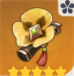
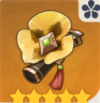
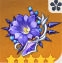
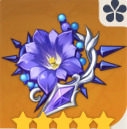
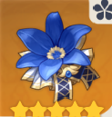
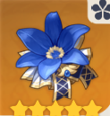

The artifact pages will explain thoroughly how to set the proper ones for the characters, an explanation of the artifact details, how to use or combo the artifact’s ability properly, and how to stack artifact buffs by switching characters to get the maximum damage dealt by the team’s DPS. Artifacts are important for a team’s damage dealing and tanking capabilities, and there are so many ways to combine the artifacts’ passive for the team, it all depends on the team composition and who is the target character to get all the buffs (Most likely DPS characters).
- Geo
- Electro
- Hydro
 

Archaic petra : 2 sets of this artifact gives you 15% geo dmg bonus. 4 sets of this artifact gives you a 35% dmg bonus for a particular element for 10s. This artifact is suitable for zhongli and ningguang.
 

Thundering Fury : 2-set increases electro damage by 15%, 4-set increases damage caused by elemental reactions by 40%.
Thunder Soother : 2-set gives 40% electro resistance, 4-set increases damage against opponents affected by electro by 35%
 

Heart of depth : 2 sets of this artifact gain 15% hydro damage bonus and 4 sets increase normal attack and charged attack damage by 30% for 15 sec. This 4 set bonus will apply after using an elemental skill.